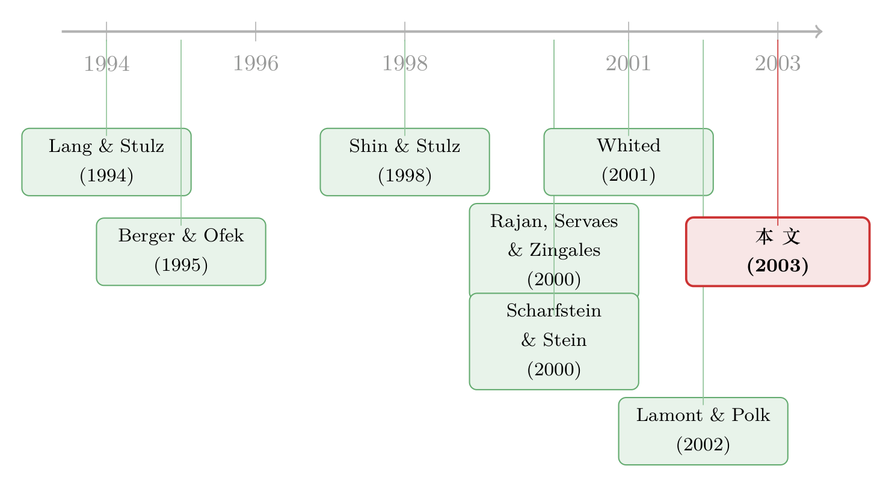

拆开，是为了把「不一样」分开——多元化折价里那笔被分拆验证的账
本文读的是 Burch & Nanda (2003, JFE)：把 106 家公司的分拆 (spinoff) 当作一台「时光机」，先把被拆开的公司在事后重新「拼」回去，看看合并体的超额价值改善了多少，再问这份改善能不能被「业务多样性的下降」解释。答案是：能，而且很稳健。改善的中位数是 6.1%，并且几乎全部集中在那些拆分前本就「打折」的公司身上。这意味着，多元化折价里至少有一部分，是公司「多元化」这件事本身造成的真实价值损失，而非测量误差或自选择。
1 一个老问题，和一个绕不开的反驳
先抛一个几乎所有读公司金融的人都知道的事实：多元化的企业，通常比专注的企业「便宜」。Lang and Stulz (1994) 和 Berger and Ofek (1995) 把这件事量化成了一个数字——多元化折价 (diversification discount)，也就是「负的超额价值 (negative excess value)」：把一家集团公司各业务部门按同行业单一业务公司的市值/账面比 (market-to-book) 加总，得到一个「想象中的拆开来卖能值多少」，再拿公司真实市值去比，结果往往是真实市值更低。
故事到这里，本来可以收尾：多元化毁灭价值，所以公司应该专注。但偏偏有人不服。
不服的理由很硬。Whited (2001) 说，这个折价多半是测量误差——你用「行业中位数的 M/B」去给一个部门的投资机会定价，这把尺子本身就是歪的。Campa and Kedia (2001)、Graham et al. (2002) 则说，这是自选择 (self-selection)——会去搞多元化的，本来就是一批「素质更差」的公司，你看到的折价只是它们本来的样子，跟「多元化」这个动作无关。Maksimovic and Phillips (2002) 用工厂层面的数据更进一步：多元化公司的投资决策，其实大体上和专注公司一样有效率。
这是一场没法靠「再跑一个横截面回归」解决的争论。因为无论你怎么比较「多元化公司 vs. 专注公司」，对方都可以回一句：你比的这两组公司，从一开始就不是一回事（选择偏误），或者你那把尺子本来就量不准（测量误差）。横截面的比较，注定无法摆脱这两个幽灵。
于是，一个自然的问题是：有没有一种办法，能把「多元化本身的代价」从「测量误差」和「自选择」里干净地剥出来？
这正是本文最聪明的一步。
2 把分拆当成「同一家公司的前后对照」
本文的做法，是不去比较两组不同的公司，而是盯住同一家公司，看它在分拆前后的变化。
分拆 (spinoff) 有一个独特的好处：当一家母公司把某个部门拆出去、让它独立上市后，被拆出去的那块 (spun-off unit) 和留下来的母公司，各自都有了独立的市场价格和会计报表。这意味着，作者可以在事后，把这两块（甚至多块）重新「拼」回去，复原出那家原本的多元化公司，然后算它的超额价值。
这就有了一个前后对照：
- 拆分前的超额价值，就是母公司分拆前的超额价值
PEV； - 拆分后的「合并体」超额价值
CEV，是把独立后的母公司和被拆单元的市值与账面值重新加总算出来的。
两者之差，作者称之为 DCEV（合并体超额价值的变化）。它衡量的，是这场分拆带来的总价值改善——注意，是「总」，不是只看留下来那块。
为什么这一点至关重要？因为它一举堵死了两个反驳。
测量误差会同时污染拆分前和拆分后的超额价值（同一把歪尺子，量两次），所以它很难解释「两次之间的差」为什么会系统性地变化。 自选择也失效了：因为合并体的事后超额价值里，包含了拆分前所有的业务单元——你没有「挑走好的、留下坏的」，你只是把同一批东西，从「捆在一起」变成了「分开」。
换句话说，如果分拆真的什么也没改变（折价纯属测量误差或选择），那 DCEV 应该和「多样性的下降」毫无关系。可一旦它有系统性的正相关，那些「benign」的解释就站不住了。
3 超额价值是怎么算的
在进入核心之前，先把这把尺子摆清楚。母公司的超额价值 PEV 定义为（取对数的）真实市值与「想象市值」之比：
$$ PEV = \ln\!\left(\frac{PMV}{\sum_{i=1}^{n} DA_i\,[\mathrm{Ind}(M/B)_i]}\right) $$
这里 PMV 是母公司市值（股权市值加上优先股、债务、流动负债的账面值），分母把每个部门 i 的资产 DA_i 乘上它所在行业里单一业务公司的 M/B 中位数，再加总。行业中位数取自包含至少五家单一业务公司的最窄 SIC 分类——这一整套，都是沿用 Berger and Ofek (1995) 的标准做法。
合并体的事后超额价值 CEV，则在分子上把被拆单元的市值 SMV 也加回来：
$$ CEV = \ln\!\left(\frac{PMV + SMV}{\sum_{i=1}^{n} DA_i\,[\mathrm{Ind}(M/B)_i]}\right) $$
而真正要分析的总改善，就是事后合并体减去事前母公司：
$$ \Delta CEV = \text{Post-spin } CEV - \text{Pre-spin } PEV $$
DCEV 才是本文的因变量。作者特意不用 DPEV（只看母公司变化），因为后者会被「拆出去的到底是好业务还是坏业务」严重干扰，不是一个可靠的总收益度量。
4 核心：一把不靠「行业代理」的多样性尺子
到这里，还差最后一块拼图：怎么度量「多样性」？
所谓多样性成本假说 (diversity cost hypothesis)，来自 Rajan, Servaes, and Zingales (2000)（下称 RSZ）和 Scharfstein and Stein (2000)：当一家公司各部门的投资机会差异越大，部门经理之间的寻租 (rent-seeking) 与讨价还价就越激烈，资本配置就越扭曲，折价就越深。于是 Hypothesis 1 顺理成章：分拆带来的 DCEV 改善，应当与「被消除的多样性」正相关。
但怎么量「多样性」？RSZ 的原始度量，是用行业 Tobin's Q 去代理部门的投资机会——这恰恰又踩进了 Whited (2001) 批评的那个坑：行业代理本身就有噪声、甚至有偏。
本文真正关键的一步，是提出了一个不依赖行业代理的、事后的直接度量 CPostDiv。它的思路朴素得令人拍案：既然分拆之后，母公司和被拆单元都有了自己真实的 M/B，那就别用行业去猜了，直接用它们各自的真实 M/B 来度量「这两块到底有多不一样」：
式中 M/B_C 是合并体的 M/B，等于两块按资产加权的平均。CPostDiv 越大，说明母公司和被拆单元的投资机会差得越远，也就是这场分拆消除掉的多样性越多。多样性成本假说预测：CPostDiv 应与 DCEV 正相关。
这把尺子的妙处在于，它把「测量误差」这条反驳也一并削弱了——它不再问行业代理准不准，而是直接读市场对这两块独立资产的真实定价。当然，它也有自己的代价（后面会讲）：它隐含假设了「事后的投资机会多样性」是「事前多样性」的合理代理。
为了不把鸡蛋放进一个篮子，作者同时还保留了两把基于行业代理的旧尺子作对照：PRSZDiv（RSZ 那个「资产加权 Q 的变异系数」，本质是资产加权 Q 的标准差除以 Q 的简单均值）和 PStdDev（与 Scharfstein-Stein 的直觉一致，是部门 Q 的加权标准差，不再除以均值）。三把尺子从不同角度逼近同一个量，各自的弱点恰好被彼此补上。
5 数据与结果
样本。106 起分拆事件，由 95 家母公司在 1979–1996 年间宣布，数据来自 SDC，并用新闻报道逐一核对、用财报回填缺失值。要求母公司同时在 COMPUSTAT 年度库与业务分部库 (Business Segment) 有数据，被拆单元独立上市后也要有数据，且 CRSP 有双方的股价。剔除了跟踪股、ADR、由并购或破产触发的分拆，以及分部资产加总与母公司资产偏离超过 25% 的样本。
描述性事实。分拆平均（中位数）让出了合并体 24.5%（20.0%）的资产。母公司的资产 Herfindahl 指数从分拆前的均值（中位数）0.489（0.473）升到分拆后的 0.712（0.700）——公司确实变得更专注了。
头号结果。分拆带来的合并体超额价值改善，中位数是 6.1%。但更耐人寻味的是它的分布极不均匀：价值改善几乎全部集中在那些分拆前本就有负超额价值（即已经被市场打折）的公司身上。对那些拆分前没被打折的公司，分拆几乎没带来什么改善。这本身就是一条强证据——如果折价是纯粹的测量假象，那「本来折价深的公司，拆开后改善最大」就很难解释。
主回归。对三把多样性尺子，结论高度一致：DCEV 与多样性的下降显著正相关，且在控制了各种「专注度变化」（如母公司 Herfindahl 对数变化 DLogPHerf）、信息不对称变化 DCStdDev、市场回报 Ctotret、分拆规模、被拆单元 M/B、母公司规模等变量后依然稳健。也就是说，哪怕你已经控制了「公司变得更专注」这件事，「不同业务被分开」本身仍然解释了额外的价值改善。
一个意味深长的「弱结果」。作者顺带检验了 Hypothesis 2、3——分拆后投资政策是否向单一业务公司靠拢、内部资本市场效率是否提升。结果只是弱相关。换句话说，多样性的负效应，并不主要通过「扭曲的投资政策」这条肉眼可见的渠道兑现。这与 Meyer, Milgrom, and Roberts (1992) 的模型暗合：部门经理的游说、寻租，哪怕没有扭曲投资，也照样能侵蚀价值——它可能伤的是人力资本、是士气、是强势部门留住人才的能力。
（关于「分拆是否真能让公司投得更聪明」这条投资政策渠道，后续文献其实给出了相当不同的回答，可参见《拆分真能让公司投得更聪明吗？——一个被「测量误差」和「内生性」一起推翻的流行结论》。）
6 文献脉络
把这条线索捋一捋，会看得更清楚这篇文章站在哪里。
最早，是 Lang and Stulz (1994) 与 Berger and Ofek (1995) 把「多元化折价」钉成了一个可度量的事实，并指出折价与「在差业务上过度投资」相伴而生。紧接着，一批关于内部资本市场的研究——Shin and Stulz (1998)、Scharfstein (1998)、Lamont (1997)——揭示了部门间的「交叉补贴」与「社会主义」式的资源错配。
然后，理论给了这套现象一个微观基础：RSZ (Rajan, Servaes, and Zingales, 2000) 和 Scharfstein and Stein (2000) 用部门经理与总部之间的寻租和讨价还价，解释了为什么多样性越大、扭曲越严重——这就是多样性成本假说。

但真正的反转来自质疑者：Whited (2001) 的测量误差说，Campa and Kedia (2001)、Graham et al. (2002) 的自选择说，以及 Maksimovic and Phillips (2002) 用工厂数据给出的「多元化投资其实没那么低效」。这些工作把前面的结论逼到了墙角。
本文与 Lamont and Polk (2002) 是这场反击战里精神最接近的两篇——后者用「行业投资水平的外生变化」来识别多样性的外生增加，发现它确实压低公司价值；本文则换了条路，用分拆这个特定样本和事后直接度量，把测量误差和自选择一起绕开。两篇殊途同归，互为印证。值得一提的是，本文之前已有 Gertner, Powers, and Scharfstein (2002) 和 McNeil and Moore (2001) 把分拆收益与内部资本市场挂钩，但它们看的是部门投资政策，而非本文这种更宽的「多样性成本」。
（多元化折价里还藏着别的暗线，比如「捆绑发债」带来的竞争效应，可参见《捆在一起发债：多元化折价里，被忽略的那条「竞争」暗线》；而分拆背后的治理动机，则可参见《拆掉一家公司，是为了让老板「坐不住」》。）
7 评论与延伸（Q&A + 研究方向）
(a) 几个可能的疑问
Q：既然 CPostDiv 用的是「事后」的 M/B，那它度量的到底是「拆分前的多样性」还是「拆分后才显现的多样性」？
这是本文最该被追问的地方，作者自己也坦承：
CPostDiv隐含假设了「分拆后两块的投资机会多样性」是「分拆前多样性」的合理代理。如果分拆这个动作本身改变了各业务的投资机会（比如独立后经营策略大变），这个代理就会失真。作者的对冲办法，是同时保留两把基于事前行业代理的尺子（PRSZDiv、PStdDev），三者结论一致，才让人相对放心。
Q：6.1% 的中位数改善，会不会只是分拆公告本身的市场情绪，而非真实的价值创造？
不太像。本文度量的是分拆生效后第一个完整财年末的超额价值，已经远离了公告窗口的情绪。而且作者另外检验了公告效应，发现它与多样性下降没有显著关系（虽然系数符号是对的）。换句话说，长期超额价值的改善，并不是公告日那点反应的延续。
Q：为什么价值改善几乎只发生在「本来就被打折」的公司身上？这是不是均值回归？
均值回归是个真实的担忧。但请注意，因变量是合并体超额价值的变化，而它与多样性下降的幅度正相关——单纯的均值回归无法解释「为什么改善的大小恰好对应多样性消除的多少」。多样性这个解释变量，提供了均值回归讲不出来的横截面信息。
Q：本文说测量误差被「绕开」了，可 CPostDiv 里不还是用了 M/B 吗？
关键区别在于：折价批评针对的是「用行业中位数去代理部门投资机会」这一步的噪声。
CPostDiv直接用母公司和被拆单元各自的真实市价，跳过了行业代理。而且因变量是「前后之差」，任何对前后都一致的系统性测量偏差，都会在差分里被抵消掉。
Q：投资政策渠道（H2、H3）只有弱相关，是不是说明多样性成本假说其实不太成立？
恰恰相反，作者明确指出，拒绝 H2 或 H3 并不与多样性成本假说矛盾。RSZ 与 Scharfstein-Stein 的机制本就不必经由「扭曲投资」兑现——Meyer et al. (1992) 早就说过，游说和寻租可以在不改变投资的情况下直接烧掉价值。弱的投资渠道结果，反而提示多样性的代价藏在更隐蔽的地方（人力资本、组织摩擦）。
Q：106 个样本，会不会太小？
样本确实不大，且集中在特定的「会去分拆」的公司——这本身是一种选择，外部有效性要打折扣。但这正是用「特定重组样本 + 事后直接度量」换来识别干净的代价。它和 Lamont and Polk (2002)「大样本 + 外生冲击」的路子互补，两者一起看，结论才更可信。
(b) 几个可能的研究问题与提案
1. 把这套「拆开—复原」逻辑搬到公司债与信用利差上。
【经济故事】多元化对股权是折价，但对债权可能是溢价——业务越分散，现金流共同保险越强，违约风险越低（这条「协同保险」效应在《把公司绑在一起，不是为了协同，而是为了「赖账」》 里有相邻的讨论）。那么，分拆在改善股权超额价值的同时，是否恶化了存续债的信用利差？多样性下降，对股东是好事，对债主可能是坏事。 【可行性】中。需要 TRACE 公司债成交数据匹配分拆事件，识别上可借用本文「拆分前后」的事件结构，看母公司存续债在分拆生效前后的利差变化，并与
CPostDiv关联。难点是 TRACE 始于 2002 年，与本文样本期不重叠，需要重新构建一个 2002 年后的分拆样本。
2. 外资持有人是否「定价」了多样性成本？
【经济故事】如果多样性成本是真实的，那么对治理与信息更敏感的投资者（如外资机构）应当更早、更强地反应在持仓上。分拆消除多样性后，外资持股比例是否系统性上升？这能为「多样性成本是真实价值损失」提供一个来自投资者行为的旁证。 【可行性】中。需要 FactSet/13F 或跨国持股数据匹配分拆事件。识别可用分拆前后外资持股变化对
CPostDiv回归。诚实地说，区分「外资因为价值改善而买入」与「外资买入推动了价值改善」存在内生性，需要额外的工具或时序结构。
3. 用机器读「业务描述」重建一个连续的多样性度量。
【经济故事】本文的多样性度量受限于 SIC 分部，粗糙且滞后。如今可以用大模型读 10-K 的业务描述，构造业务间的「语义距离」，得到一个比行业代理细腻得多的多样性指标，再去重做这条折价—分拆的检验。 【可行性】高。10-K 全文可得，文本嵌入技术成熟。可先在本文样本上验证新指标与
CPostDiv的相关性，再推广到全样本。主要风险是文本度量的「多样性」是否真对应「投资机会的多样性」，需要小心校准。
4. 流动性渠道：分拆是否通过改善二级市场流动性创造价值？
【经济故事】被捆绑的复杂公司可能因「难定价」而流动性差、折价深。分拆把一个复杂体拆成两个更易定价的纯业务公司，可能直接改善了股票流动性，这本身就是价值的一部分，且独立于多样性成本机制。 【可行性】高。CRSP/TAQ 可算分拆前后的 Amihud、价差等流动性指标，看它们对
DCEV的解释力，并检验它是否「吃掉」了CPostDiv的系数。这能把「多样性成本」与「流动性改善」两条渠道分离开。
8 参考文献与我的判断
我的判断。这篇文章的真正贡献，不在于又一次「证明」了多元化折价，而在于它设计了一个几乎无法被两大反驳（测量误差、自选择）攻破的识别结构：盯住同一家公司、用前后差分、用事后真实市价取代行业代理。这是一个方法论上的漂亮转身。结论也足够克制——它没说多元化「总是」毁灭价值，只说在分拆这批公司里，多样性本身确实是一部分真实的价值损失。
要担心的，主要有三点。其一，CPostDiv 用事后多样性代理事前多样性，这个假设无法直接检验，是整篇文章的阿喀琉斯之踵；好在三把尺子结论一致，部分缓解了顾虑。其二，106 个分拆样本是一群高度自选的公司——它们恰好是「值得拆」的，所以「分拆能创造价值」与「多样性是真实成本」这两件事，在这个样本里天然交织，外推到一般多元化公司时要谨慎。其三，投资政策渠道只有弱相关，意味着我们其实还没看清多样性到底通过什么机制烧掉了价值——文章很诚实地把这归给了人力资本、组织摩擦这些「看不见」的渠道，但这更像是一个待解的问题，而非答案。
后续我最想看到的，是把这套识别逻辑接到债权人和外资持有人身上：同一场分拆，对股东、债主、外资机构的含义可能截然不同，而那恰恰是「多样性成本」这枚硬币尚未被翻过来的另一面。
参考文献
- Berger, P., Ofek, E. (1995). Diversification's effect on firm value. Journal of Financial Economics 37, 39–65.
- Burch, T. R., Nanda, V. (2003). Divisional diversity and the conglomerate discount: evidence from spinoffs. Journal of Financial Economics 70(1), 69–98.
- Campa, J., Kedia, S. (2001). Explaining the diversification discount. Journal of Finance 57, 1731–1762.
- Gertner, R., Powers, E., Scharfstein, D. (2002). Learning about internal capital markets from corporate spinoffs. Journal of Finance 57, 2479–2506.
- Graham, J., Lemmon, M., Wolf, J. (2002). Does corporate diversification destroy value? Journal of Finance 57, 695–720.
- Lamont, O. (1997). Cash flow and investment: evidence from internal capital markets. Journal of Finance 52, 83–109.
- Lamont, O., Polk, C. (2002). Does diversification destroy value? Evidence from industry shocks. Journal of Financial Economics 63, 51–77.
- Lang, L., Stulz, R. (1994). Tobin's q, corporate diversification and firm performance. Journal of Political Economy 102, 1248–1280.
- Maksimovic, V., Phillips, G. (2002). Do conglomerate firms allocate resources inefficiently across industries? Theory and evidence. Journal of Finance 57, 721–767.
- Meyer, M., Milgrom, P., Roberts, J. (1992). Organizational prospects, influence costs, and ownership changes. Journal of Economics and Management Strategy 1, 9–35.
- Rajan, R., Servaes, H., Zingales, L. (2000). The cost of diversity: the diversification discount and inefficient investment. Journal of Finance 55, 35–80.
- Scharfstein, D., Stein, J. (2000). The dark side of internal capital markets: divisional rent-seeking and inefficient investment. Journal of Finance 55, 2537–2564.
- Shin, H., Stulz, R. (1998). Are internal capital markets efficient? Quarterly Journal of Economics 113, 531–552.
- Whited, T. (2001). Is it inefficient investment that causes the diversification discount? Journal of Finance 56, 1667–1692.